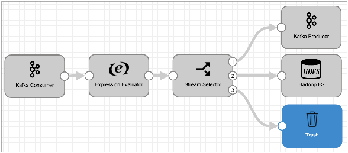

The Trash destination discards records. Use the Trash destination as a visual representation of records discarded from the pipeline. Or, you might use the Trash destination during development as a temporary placeholder.
When you use the Trash destination, the pipeline discards the records. But unlike discarding the record as part of pipeline or stage error handling, you can monitor the number of records being discarded, you can create metric and data alerts, and you can examine the data sent to Trash as part of data preview or a monitor snapshot.
For example, the following pipeline uses the Stream Selector to route data to the Kafka Producer and Hadoop FS targets based on different conditions. The Stream Selector routes all records that are not included in either of the other conditions to the Trash destination.

The Trash destination has no configuration options. To use the Trash destination in a pipeline, simply add the stage and connect the pipeline to the stage.